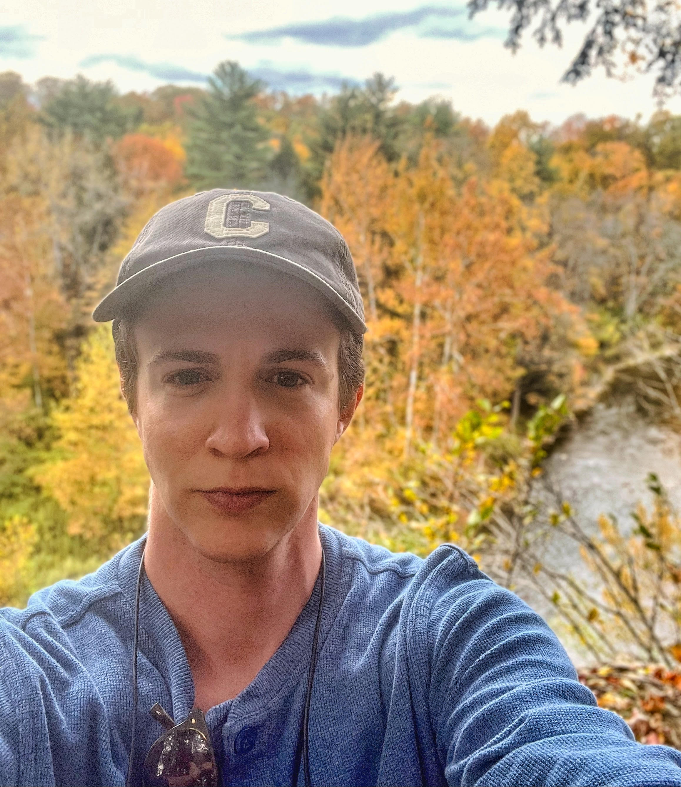
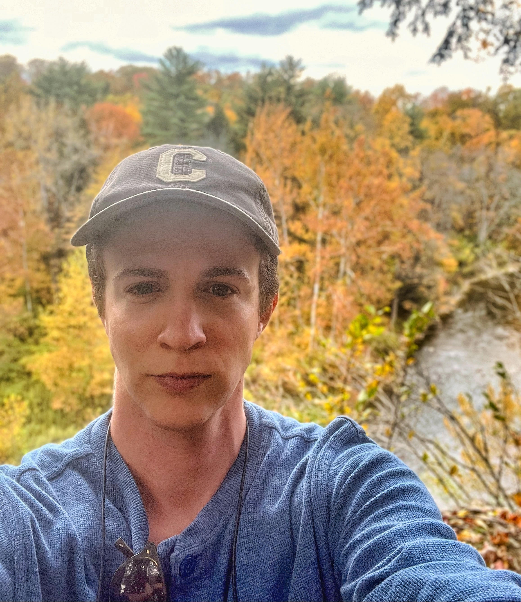

|

|
Gates Hall
|
|

|
Gates Hall
|
I am a Ph.D. candidate in Computer Science at Cornell University, where I am very fortunate to be a member of the Relax ML Lab and advised by Chris De Sa. I am broadly interested aligning the use of AI/ML with broader public values. This involves researching abstractions to make AI/ML systems assessable not just by engineers for debugging purposes, but also by other stakeholders who want to ensure that these systems' empirical behavior aligns with their intended use.
My CS work has thus-far focused on empirically motivated, theoretically grounded problems in Bayesian inference, model selection, and deep learning. My tech policy and ethics research aims to characterize the relationship between uncertainty, reliability, and accountability, for which I also engage methods from social sciences and the law.
During Summer 2022, I had the privilege of interning with Solon Barocas and Siddhartha Sen at Microsoft Research NYC. This has led to two collaborations, one focused on CS disciplinary contributions and a second intended for publication in a tech law journal. In 2021, I was named a "Rising Star in EECS" by MIT. Prior to attending Cornell, I worked for several years in industry at companies both big and small, and did my undergrad in Computer Science and Archaeology. I am a member of Cornell's initiative on Artificial Intelligence, Policy, and Practice (AIPP), and am engaged in a variety of outreach and service programs in CS mentorship and education. I am very grateful to have had my work supported by AIPP and the John T. and Catherine D. MacArthur Foundation.
In my free time, I am fully committed to perfecting the art of rolling fresh pasta 🍝. I am usually doing that, but if not you can find me reading, learning Italian, or practicing mischief.
My overall interest in arbitrariness relates to questions of how we can derive reliable knowledge from procedures that rely on or use ML. My work to engage these questions spans theoretical, empirical, and normative approaches, which I have used (often in combination) to study how arbitrariness can creep into various stages of the ML pipeline, e.g, problem formulation, optimization, hyperparameter optimization, and model selection. My ongoing work focuses on diagnosing and mitigating different types of variance. Example papers: "Hyperparameter Optimization Is Deceiving Us, and How to Stop It" (NeurIPS 2021 Poster); "Variance, Self-Consistency, and Arbitrariness in Fair Classification" (Preprint, 2023)
I work on exact, efficient MCMC algorithms, with the overall aim to develop sampling methods that are able to scale to the largest and hardest modeling problems in high-impact domains, e.g., the physical sciences and public health. Current projects include developing new algorithms and a lightning-fast, easily adaptable empirical MCMC package to encourage large-scale experimentation in this research area. Example papers: "Asymptotically Optimal Exact Minibatch Metropolis-Hastings" (NeurIPS 2020 Spotlight); "Bringing the Heat: Scaling Exact SG-MCMC with Higher Temperatures" (Forthcoming preprint, 2023)
I am particularly interested in how "AI hype" can work to occlude more seemingly mundane sources of risk in AI/ML systems. I am currently in the early stages of working on a couple projects with law and policy collaborators that dig into specific variations on this theme. Example papers: "Accountability in an Algorithmic Society" (FAccT 2022 Proceedings); Accuracy-Efficiency Trade-Offs and Accountability in Distributed ML Systems (EAAMO 2021 Contributed Talk); "Fast or Accurate? Governing Conflicting Goals in Highly Autonomous Vehicles." (Colorado Technology Law Journal 2022)
I feel very strongly about supporting the work of my more-junior colleagues. I collaborate on submissions with undergraduate, masters, and Ph.D. students, many of whom are new to publishing and peer review. Example papers: "A Tale of Two Measures: Optimal Transport for Fair Classification at Any Decision Threshold" (Forthcoming, AAAI 2023, AI4SG Workshop); "Four Years of FAccT" (FAccT 2022 Proceedings)
This is likely out-of-date.
{kind=link}
{kind=link}